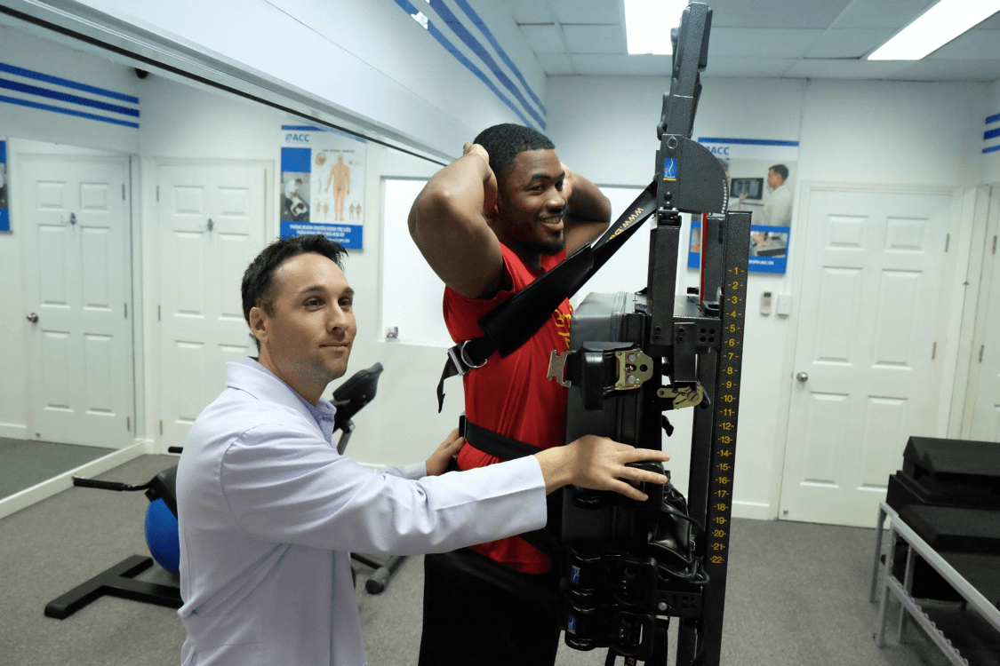

The ATM2 device is a vertical (upright) treatment table that has three sets of belts. These specialized belts allow you to be safely supported while the specific body areas causing you pain are comfortably compressed and positioned. Within minutes of using the ATM2, your painful movements can become completely pain-free!
Who will benefit from the ATM2?
The ATM2 can help people with:
- Back pain
- Neck pain
- Shoulder pain
- Hip pain
- Knee pain
- Postural imbalances such as lordosis, kyphosis, and scoliosis
At ZaraTherapyClinic, our focus is to bring together all aspects of a patient’s health to determine the best way to get the achieved results. Depending on your condition, test results and examination findings, we are able to utilize all the tools we have at our disposal to treat your condition effectively.